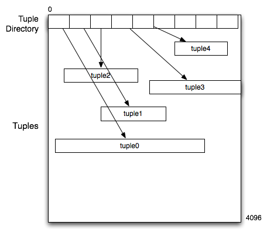
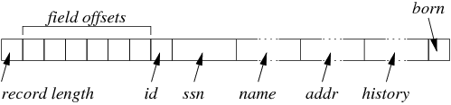
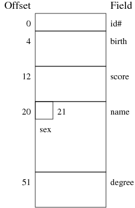
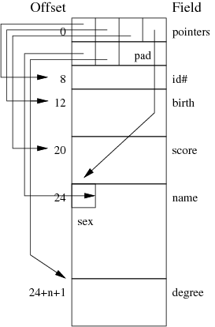

-
Assume that a data file is composed of 4KB pages, where each page
is structured as follows:

The start of the page contains a tuple directory which is a sequence
of three-byte values, where the first 12 bits contain the offset
into the page of the tuple and the second 12 bits contain the
tuple length.
Write a C function that takes three parameters: an open file descriptor,
a page number and a record number and reads the data for the corresponding
record. Do not read the whole page; read just enough of the data
to solve the problem. Dynamically allocate a memory buffer large enough to
hold the tuple data when read in. The function should return a pointer to
the start of the tuple memory buffer.
The function should do appropriate error-checking and return NULL
in the case that any operation cannot be completed.
Use the following function template:
char *getTuple(int inFile, int pageNumber, int recNumber) { ... }
Hint: when a directory value is read into memory, the high-order bits contain
the offset and the low-order bits contain the length.
Use only the low-level i/o operators (system calls)
such as open(), read(), write(),
lseek(), etc.
[show answer]
We assume that all of the relevant .h files have been included.
#define PAGE_SIZE 4096
char *getTuple(int inFile, int pageNumber, int recNumber)
{
// position file at start of page
off_t pageAddr = pageNumber * PAGE_SIZE;
if (lseek(inFile, pageAddr, SEEK_SET) < 0)
return NULL;
// re-position the file to the start of the tuple directory entry
off_t dirOffset = recNumber * 3; // 3 bytes per directory entry
if (lseek(inFile, dirOffset, SEEK_CUR) < 0)
return NULL;
// read 3-byte directory entry for this tuple
unsigned int dirEntry;
if (read(inFile, &dirEntry, 3) != 3)
return NULL;
// extract tuple offset and length from directory entry
unsigned int tupOffset, tupLength;
unsigned int lengthMask = 0x00000fff; // low-order 12 bits
unsigned int offsetMask = 0x00fff000; // high-order 12 bits
tupOffset = (dirEntry & offsetMask) >> 12;
tupLength = dirEntry & lengthMask;
// allocate memory buffer to hold tuple data
char *tupBuf;
if ((tupBuf = malloc(tupLength)) == NULL)
return NULL;
// position file at tuple location
off_t tupAddr = pageAddr + tupOffset;
if (lseek(inFile, tupAddr, SEEK_SET) < 0)
return NULL;
// read tuple data into buffer
if (read(inFile, tupBuf, tupLength) != tupLength)
return NULL;
return tupBuf;
}
-
Consider a data file containing tuples with a page structure similar
to that in the previous question.
Pages are 4KB in size, and each page contains a tuple directory
with 100 entries in it, where each entry is 3-bytes long.
Assuming that the (minimum,average,maximum) tuple lengths are (32,64,256) bytes
and that the file has 100 pages, determine the following:
The minimum number of tuples that the file can hold
The maximum number of tuples that the file can hold
[show answer]
The minimum number of tuples is zero (trick question)
Maximum occurs when all tuples are minimum size (or close to it).
Each page uses 300 bytes for the tuple directory, leaving 4096-300=3796 bytes
of space for tuples. In theory, this amount of space could hold floor(3796/32)
= 118 tuples; however, the page directory only has space for 100 tuples,
so 100 tuples is the maximum number of tuples per page.
Since we have 100 pages, the file can hold 100*100=10000 tuples.
-
Consider a variation on the above scenario. Rather than pages having a fixed size
tuple directory, the tuple directory can grow and shrink depending on the number
of tuples in the page. For this to work, the tuple directory starts at the bottom
of the page (address 0) and grows up, while tuples are added from the top of the
page (address 4095) and grow down.
If all other factors are the same (total 100 pages, (min,avg,max) tuple lengths
(32,64,128)), what is the maximum number of tuples that the file can hold?
You may assume that tuples can begin at any address (i.e. they do not have to
start at a 4-byte address).
[show answer]
The maximum number of tuples still occurs when all tuples are minimum size.
However, in this case we need to balance the tuple space against the directory
space. For example, if we have 100 tuples, then the top 3200 bytes of the
page are occupied by tuple data, leaving 896 (4096-3200) bytes for the slot
directory. We can clearly add more tuples, since we have space for them and
space to hold their directory entries. Eventually, though, there will be
enough tuples that there is no more room to add directory entries for them
and the page is full. Since each tuple requires space for its data (32 bytes)
plus 3 bytes for a directory entry, we can compute the maximum tuples that
will fit in a page by finding the maximum N such that (3*N + 32*N) < 4096.
In this case, N=117 and so this the file can hold at most 11700 tuples.
This scenario is not totally implausible since some common tables have
fixed-size tuples (consider a "link" table with just two foreign keys).
Of course, in such a case, we wouldn't need the tuple directory either,
since we could simply compute the tuple offset based on its number in the
page.
-
[Based on Garcia-Molina/Ullman/Widom 13.7.1]
Consider the following relational table:
create table Patient (
id integer primary key,
ssn char(20),
name varchar(30),
addr varchar(60),
history varchar(200),
born date
);
Consider how records of this type might be represented when stored
in disk blocks.
If a pointer within a record requires 4 bytes and the record length
is also stored as a 4-byte quantity, how many bytes would be needed
for each Patient record, excluding of the space required to
store the variable-length fields?
For variable-length records (varchar), assume that we don't
need a terminating char (e.g. '\0') but we do need to allocate
a multiple of 4 bytes to the field to ensure alignment of possible
following integer fields.
(These additional bytes would not be necessary if the fixed-length fields
were all stored at the front of the record.)
How many bytes would be required for the following instances of
Patient records:
insert into Patient values (
12345678, '222-444-555-7777',
'John Smith', (10)
'50 Smith St, Smithton, 2345', (28)
'Previously diagnosed with URTI, also weak ankles', (48)
'1966-12-2'
);
insert into Patient values (
87654321, '123-456-654-4321',
'Jane Brown', (10)
'15 Brown St, Brownsville, 2427', (31)
'Prior history of urinary tract infections', (41)
'1966-12-2'
);
(Note that the (string lengths) given after
each string are not part of the insert statement).
[show answer]
Assume that the record has the following structure:

The fixed storage cost includes:
- the record length (4 bytes)
- offsets for each of the fields (4 bytes times 6)
- fixed-length fields id (4 bytes), ssn (20 bytes), born (4 bytes for date)
This gives a total fixed storage cost of 4+24+4+20+4 = 56 bytes
For the John Smith record, add additional bytes for
- name (12 bytes ... 10 bytes rounded up for alignment)
- addr (28 bytes ... no rounding up needed)
- name (48 bytes ... no rounding up needed)
giving a total of 56+12+28+48 = 144 bytes
For the Jane Brown record, add additional bytes for
- name (12 bytes ... 10 bytes, rounded up for alignment)
- addr (32 bytes ... 31 bytes, rounded up)
- name (44 bytes ... 41 bytes, rounded up)
giving a total of 56+12+32+44 = 144 bytes
It is a coincidence that both records come out with the same length.
-
PostgreSQL tuples have an array of flags to indicate where NULL values
occur in tuples. Two of the critical functions for manipulating tuples
in PostgreSQL (heap_form_tuple() and heap_modify_tuple())
accept a parameter which is an an array of flags for NULLs, as well as
accepting an array of Datum values.
This array contains only the non-NULL attribute values.
For example, a tuple like R(42,null,'abc',-5) would be
represented by the two arrays: flags=(0,1,0,0) and values=(42,'abc',-5).
Why doesn't PostgreSQL simply include the NULL values in the array
of Datum values?
[show answer]
Every possible collection of bits/bytes represents a valid
Datum value (e.g. you can't simply user zero to represent
NULL, because zero is a perfectly useful integer value).
Since there is no way to represent NULL as a Datum, we
clearly can't include NULL values in the Datum array.
This means that we need a separate representation for NULLs; it
makes sense to simply use a bit-string, with one bit for each
attribute, where a value of 1 means "this attribute is NULL", and
a value of 0 means "this attribute has a value; look for it in the
Datum array".
-
Consider a Students relation defined as:
CREATE TABLE Students (
id# integer, name varchar(30),
gender varchar(1), birth date,
degree varchar(10), score real
);
Assume that:
- There are 20,000 student records
- The relation is stored in one file
- The file is composed of 1024-byte blocks
- Average block-fetch time (Tr) is 10ms
- A date is represented by an 8-byte long value
- All numeric values must be stored on 4-byte address boundaries
- Average length of name value is 15 chars
- Average length of degree value is 5 chars
Consider two possible storage structures:
- fixed-length records with a presence bit-vector
- variable-length records with a fixed-size directory
containing one-byte offset values
For each of these structures:
- Show the internal record structure and compute the (average)
size of a record
- Compute how many blocks are needed to store the whole relation
- Compute how long it takes to answer a query on id# if
the file is sorted on this field (worst case value)
[show answer]
-
fixed-length records with a presence bit-vector ...
-
Show the internal record structure and compute the (average)
size of a record ...
Each record has something like the following structure, where fields
are arranged to ensure that no numeric field begins on a non-aligned
address boundary.

While character fields don't need to be aligned on 4-byte addresses,
they do need to be as large as the maximum number of characters that
might be stored in them (e.g. varchar(10) always occupies
10-bytes, regardless of the actual size of the string).
The size of each record is thus:
- 4 bytes for the id# field
- 8 bytes for the birth field
- 8 bytes for the score field
- 1 bytes for the gender field
- 30 bytes for the name field
- 10 bytes for the degree field
giving a total of 4 + 8 + 8 + 1 + 30 + 10 = 61 bytes.
This will need to be padded to 64 bytes to ensure that the next record
in the page also begins on a 4-byte address.
Solution: R = 64
-
Compute how many blocks are needed to store the whole relation
If each record is 52 bytes long, and there are 1024 bytes in a block,
then we could potentially store Nr = floor(1024/64) = 16
records in a block.
However, we also need to store the presence vector to indicate which
record slots are actually filled.
This requires at last Nr bits, thus reducing the
effective number of records per block to 15.
The block contains 15*64-byte records along with a 15-bit (= 2-byte)
presence vector.
This "wastes" 62 bytes in each block, which is unfortunate but unavoidable.
Thus, Nr = 15
If there are 15 records in each block, then we need
b = ceil(20,000/15) = 1334 blocks to store all of the records.
Solution: b = 1334
-
Compute how long it takes to answer a query on id# if
the file is sorted on this field (worst case value)
Performing a binary search requires us to examine at most
ceil(log2b) = ceil(log21334) = 11 blocks.
Since the cost of reading each block is Tr=10ms,
then the total i/o cost is 110 ms
Solution: TBinarySearch = 110ms
-
Variable-length records with a fixed-size directory ...
- Show the internal record structure and compute the (average)
size of a record
Each record has something like the following structure, where fields
are arranged to ensure that no numeric field begins on a non-aligned
address boundary.

In this case, one byte of storage is required for each field to hold
the offset of the field. Since there are 6 fields, this will require
6 bytes, which then needs to be padded to 8 bytes to ensure that the
first numeric field starts on a 4-byte address boundary.
The offset block will be followed by four fixed-size fields:
- 4 bytes for the id# field
- 8 bytes for the birth field
- 8 bytes for the score field
- 1 bytes for the gender field
These will be followed by the variable-length fields:
- name, with an average of 15 characters (15 bytes)
- degree, with an average of 5 characters (5 bytes)
On average, this gives a total record size of
8 + 4 + 8 + 8 + 1 + 15 + 5 = 49 bytes.
This will need to be padded to a multiple of 4 bytes, and so we
would expect an effective average record size of 52 bytes.
Solution: R = 52
-
Compute how many blocks are needed to store the whole relation
If each record is 64 bytes long, and there are 1024 bytes in a block,
then we could potentially store Nr = floor(1024/52) = 19
records in a block.
However, we also need to store a directory to indicate where each
record is located.
This requires at least Nr bytes.
If the block contains 19*52-byte records, then the amount of space
available for dictionary is 1024-19*52 = 36 bytes, so there is room
for both the dictionary and all Nr records.
presence vector.
This "wastes" 17 bytes in each block (on average), which is unfortunate
but unavoidable.
Thus, Nr = 19
If there are 19 records in each block, then we need
b = ceil(20,000/19) = 1053 blocks to store all of the records.
Solution: b = 1053
-
Compute how long it takes to answer a query on id# if
the file is sorted on this field (worst case value)
Performing a binary search requires us to examine at most
ceil(log2b) = ceil(log21053) = 11 blocks.
Since the cost of reading each block is Tr=10ms,
then the total i/o cost is 110 ms
Solution: TBinarySearch = 110ms